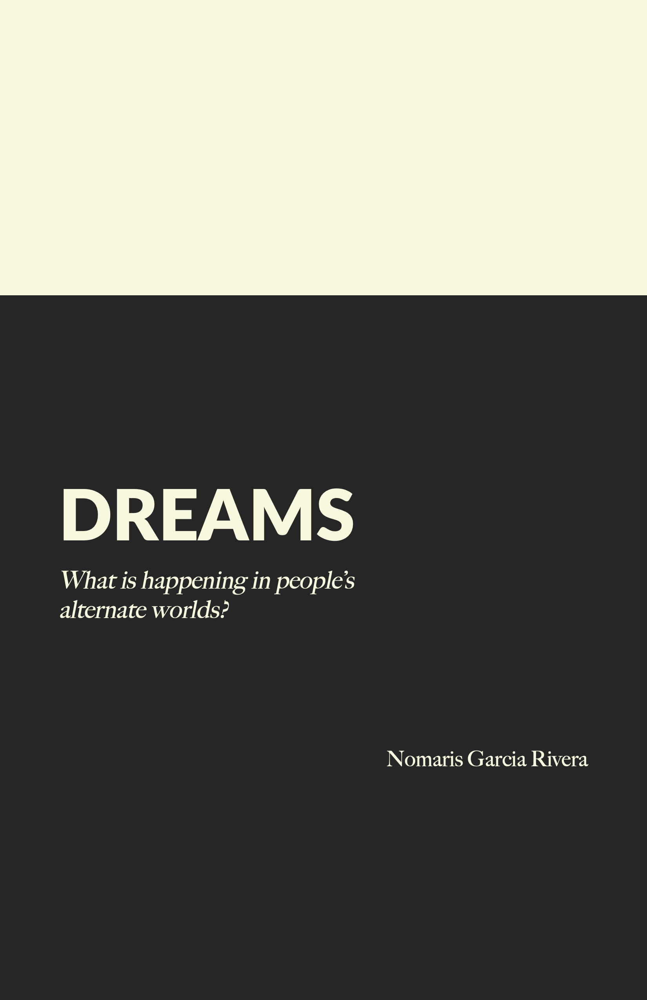
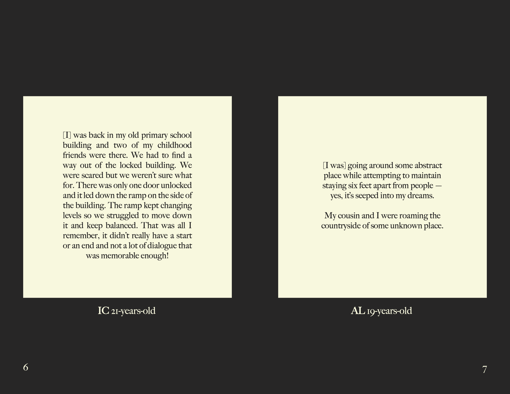

Nomaris created a Zine documenting people's dreams during the COVID-19 quarantine outbreak. A lot of people felt as though their dreams have been stranger and more frequent than usual, in some cases the dreams even mixed with the reality of the crisis. She found a lot of interest in documenting an even stranger part of these strange times.
Here is a preview of the dreams from the zine, which you can download if you would like to read more:
